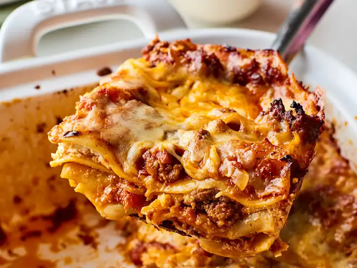
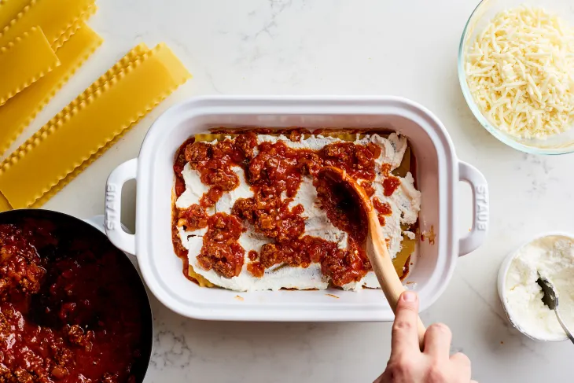
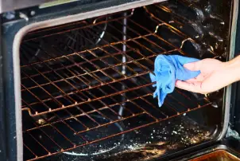
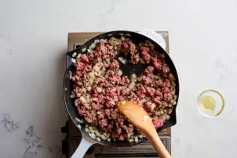
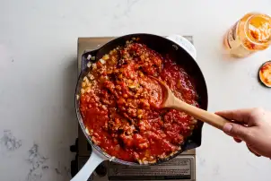

How To Make the Easiest Lasagna Ever
QUICK OVERVIEW
Tips For Making the Easiest Lasagna
- Use a store-bought pasta sauce that tastes great.
- Make sure the lasagna noodles are completely covered in the sauce.
- Let it rest on a cooling rack for at least 15 minutes before slicing a square.
While it’s impossible to beat the classic version — with a homemade ragu and, when I can manage it, homemade pasta — I’m all about an easier version that makes lasagna a much more frequent occurrence. This recipe is exactly that. This lasagna is about as low-lift as you can get while still achieving cheesy, crowd-pleasing results.

3 Reasons This Is the Best, Easiest Lasagna Ever
This lasagna isn’t complicated. There are three things about it that really make it the best (and the easiest). These are also tips that will ensure cozy casserole success.
- This recipe uses store-bought sauce (make sure you get one you love). There are just three components that make a lasagna great: the pasta, the cheese, and the sauce. Since this recipe starts with a jar of marinara for ease, make sure it’s one that tastes great. My favorite brand is Rao’s, but choose your personal favorite.
- The lasagna noodles cook right in the sauce.Since the noodles aren’t pre-boiled, they’ll cook from the heat and steam in the oven. It’s important that they’re completely covered in the sauce so they cook evenly. A dry corner will result in a crunchy, un-cooked corner.
- The lasagna can (and should) rest before eating. Like all lasagnas, this one is great made ahead, and actually will be better made a little ahead of eating. Yes it’s tempting to cut into the lasagna right when you pull it from the oven, but let it rest on a cooling rack for at least 15 minutes. This will help firm up all the layers and make it much easier to slice a square. And of course you can make it a day ahead or in the morning then reheat.

Savor layers of rich meat sauce, creamy béchamel, and tender pasta, topped with melted mozzarella. This hearty Italian dish is perfect for family dinners or cozy gatherings.
INGREDIENTS
- 1 medium yellow onion
- 1 tablespoon olive oil
- 1 pound lean ground beef
- 1/2 teaspoon kosher salt
- 1/4 teaspoon freshly ground black pepper
- 1 (24 to 25-ounce) jar marinara sauce (3 cups), such as Rao's or Newman's Own
- 12 ounces low-moisture mozzarella cheese, shredded (about 3 cups), divided
- 15 dry lasagna noodles (not no-boil, about 2/3 of a 1-pound box), divided
- 15 to 16 ounces whole-milk ricotta cheese (about 2 cups), divided
STEPS
- Heat the oven to 400ºF. Arrange a rack in the middle of the oven and heat the oven to 400°F.

- Brown the beef and onion.Finely chop 1 medium yellow onion. Heat 1 tablespoon olive oil in a 12-inch or larger regular or cast iron skillet over medium-high heat until shimmering. Add the onion, 1 pound lean ground beef, 1/2 teaspoon kosher salt, and 1/4 teaspoon freshly ground black pepper, and cook, breaking the beef up into small pieces with a wooden spoon, until the beef is cooked through, 6 to 8 minutes. Remove from the heat and let cool for 5 minutes.

- Prepare the baking dish and assemble the meat sauce.Open 1 (24 to 25-ounce) jar marinara sauce (3 cups). Spread a thin layer of the sauce in the bottom of a 9x13-inch baking dish. Stir the remaining sauce into the ground beef mixture.

Back to the odin recipes homepage